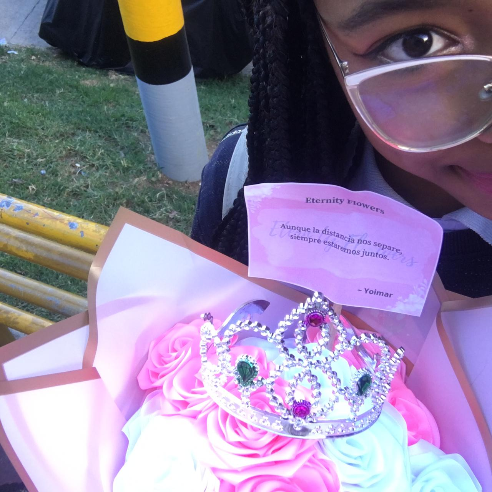
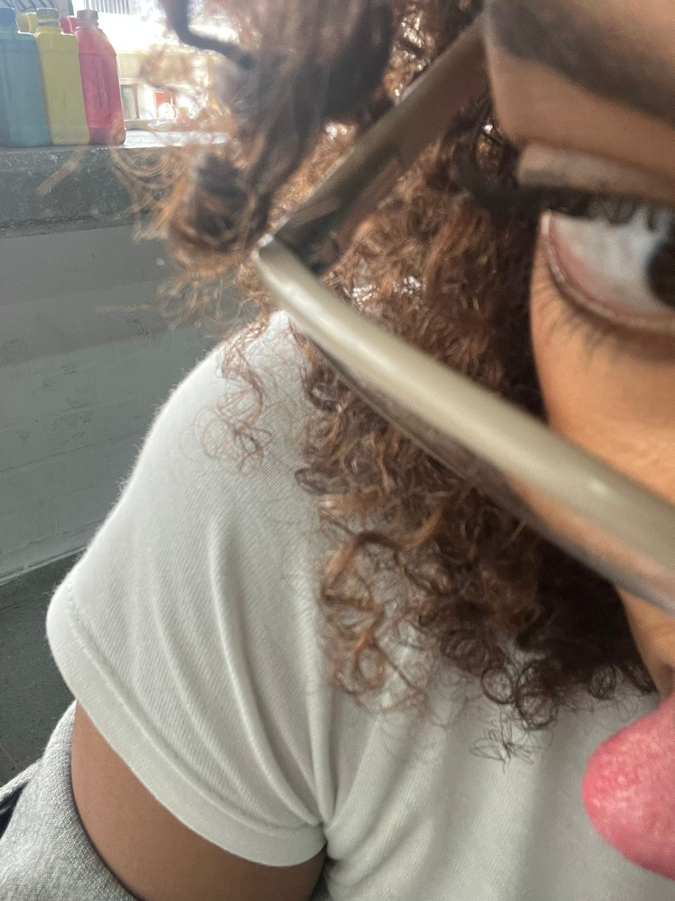
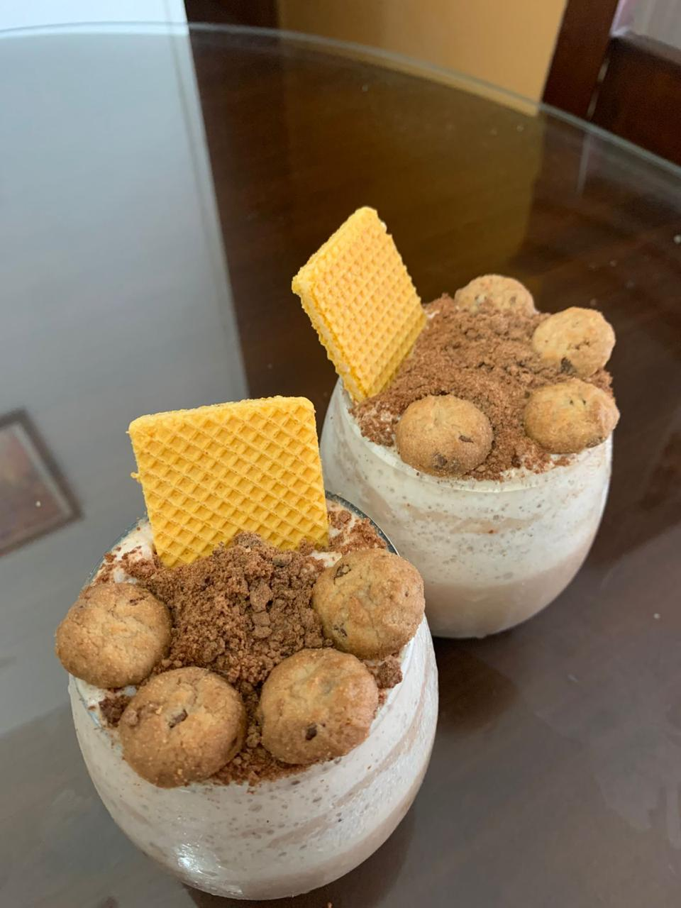
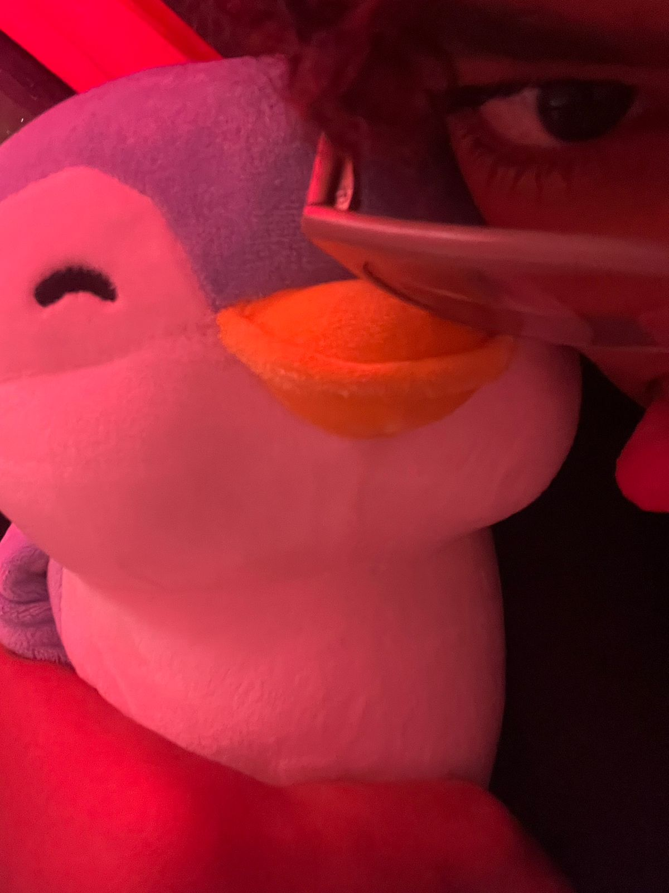
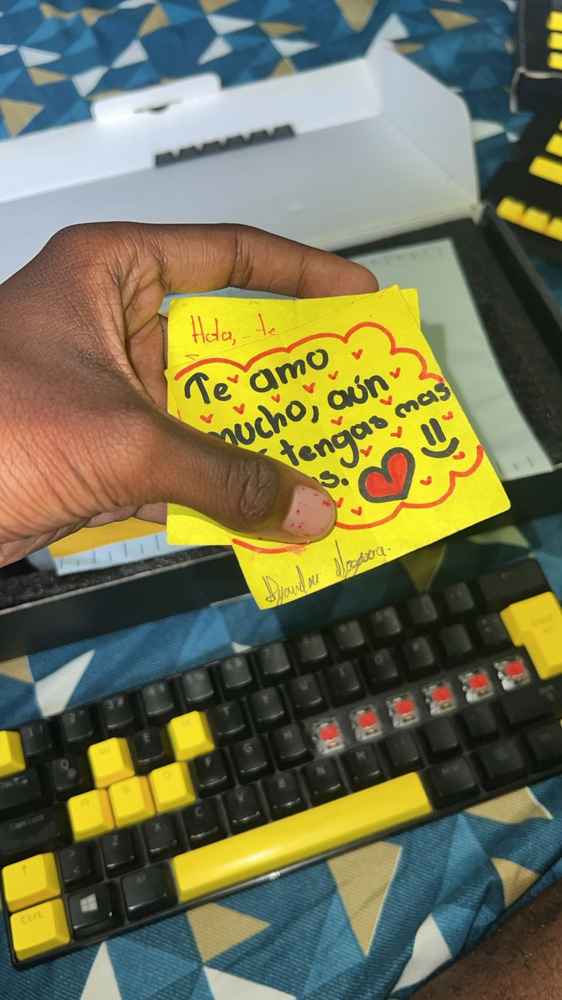
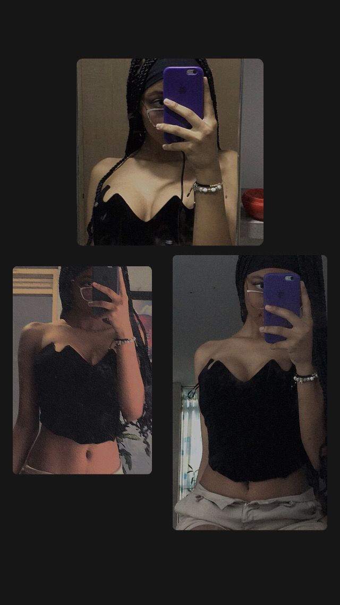
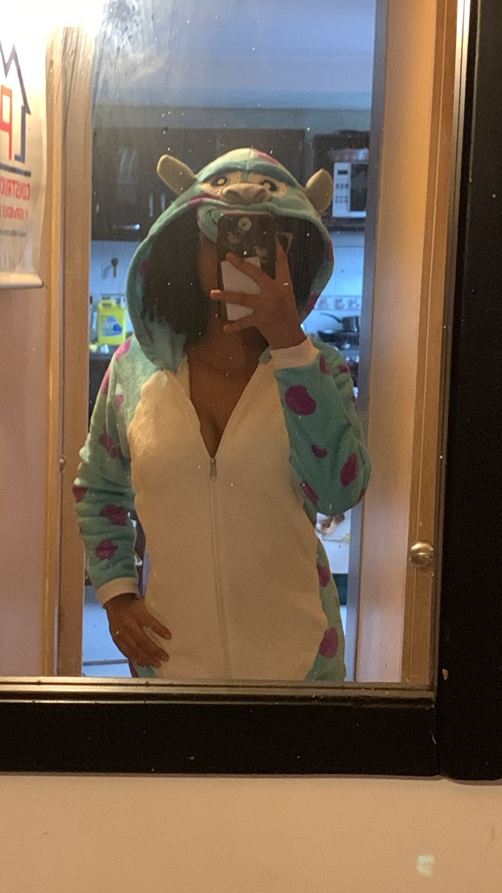
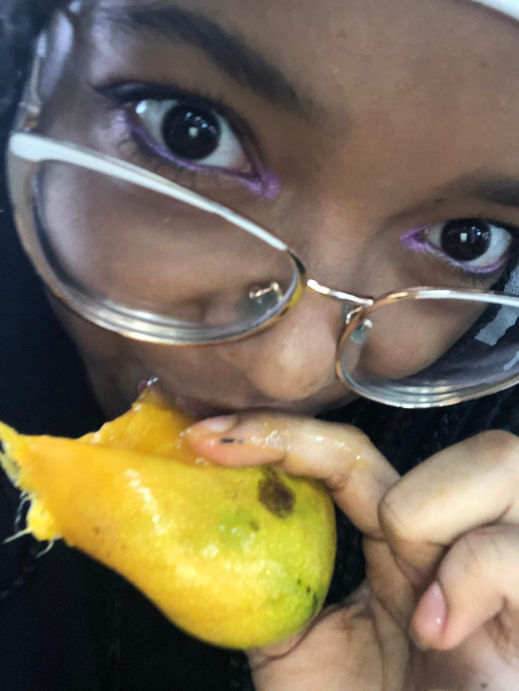

Gracias a este libro empezamos a hablar mucho más. Fue como el inicio de muchas conversaciones sobre libros y cosas que nos gustan.
Sin darnos cuenta, se volvió una forma de acercarnos y de compartir más momentos hablando.
Un viaje por algunos recuerdos que nunca quiero olvidar.
Todo comenzó en el colegio...
Nunca imaginé que una simple conversación terminaría convirtiéndose en tantos recuerdos.

Gracias a este libro empezamos a hablar mucho más. Fue como el inicio de muchas conversaciones sobre libros y cosas que nos gustan.
Sin darnos cuenta, se volvió una forma de acercarnos y de compartir más momentos hablando.
Yo siempre pensé que esta saga no era para mí, incluso creía que no me iba a gustar.
Pero tú me dijiste que le diera una oportunidad… y te hice caso.
Al final terminé descubriendo una historia increíble, que ahora es de mis favoritas. Todo cambió gracias a ti.
Esta película me la recomendaste tú y cuando la vi, no supe bien cómo explicarlo.
Simplemente me gustó demasiado.
Es de esas historias que no solo se ven, sino que se sienten.
Me dejó algo especial.

Detrás de cada una de estas fotos hay algo más que imágenes. Son momentos que no se pueden repetir, conversaciones que surgieron sin planearse y recuerdos que quedaron guardados de forma especial.
Cada foto representa una etapa, una risa, una charla o un instante que, aunque parezca simple, tiene un valor importante. Son pequeñas partes de algo más grande que se fue formando con el tiempo.
No son solo fotos... son recuerdos que tienen un significado que va más allá de lo que se ve.
con amor, siempre





